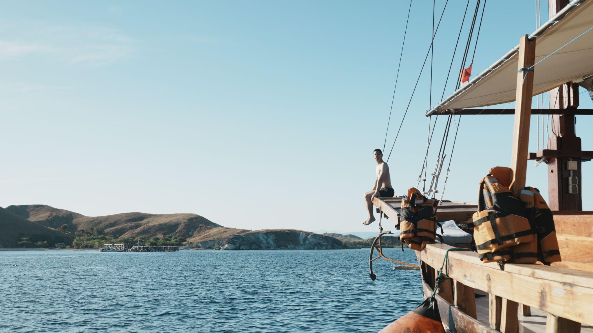

Learn the key differences between open trips and private charters in Komodo, and find out which one suits you.
One of the biggest questions people usually ask before sailing around Komodo National Park sounds simple… but somehow can still feel confusing to answer:
“Should I join an open trip or just book a private charter instead?”
The truth is, both experiences are equally amazing.
You’ll still get to visit beautiful islands, snorkel in crystal-clear water, hike around Komodo, watch sunsets near Kalong Island, and spend a few unforgettable days surrounded by some of the most beautiful landscapes in Indonesia.
But the type of trip you choose can completely shape the atmosphere of your journey.
Some travelers genuinely love open trips because of the social side of the experience meeting new people, sharing stories onboard, and enjoying a more lively atmosphere during the trip.
Others prefer private charters because they want something quieter, more flexible, and more personal. Sometimes, having the freedom to move at your own pace and spend quality time only with your own group makes the entire experience feel more relaxing.
In this guide, we’ll help you understand the real differences between open trips and private charter Komodo experiences from the overall atmosphere and budget considerations to flexibility, comfort, and what type of traveler each experience is best suited for.
What’s the Difference Between an Open Trip and a Private Trip?
As the name suggests, an open trip means your sailing experience will be shared with other travelers on the same boat.
For example, if a boat has a capacity of 10 guests and the trip is fully booked, those 10 people may come from completely different countries, backgrounds, and travel styles but everyone shares the same itinerary, snorkeling spots, dining area, and overall sailing experience together.
But don’t worry, sharing the trip doesn’t mean everyone sleeps in the same room too. At Kapalsantai, the boats available for open trips are already carefully curated. Some boats offer private cabins, while others offer shared cabin options depending on your preference and budget.
So if you choose a private cabin, you’ll still have your own private sleeping space and you also have your own private bathroom as well. Meanwhile, shared cabins are designed for travelers who are comfortable sharing a room with other guests during the trip.
On the other hand, a private charter means you book the entire boat exclusively for your own group, without any other travelers joining the trip.
One of the biggest advantages of a private trip is flexibility. The itinerary can often be adjusted based on your travel style, preferred pace, and destinations around Komodo National Park.
However, it’s important to note that itinerary flexibility usually applies within the Komodo Island area itself. Routes involving destinations outside Komodo such as Lombok, Bali, or Raja Ampat are a different case and depend heavily on the type of boat and sailing route available.
For now, most private charter experiences at Kapalsantai still focused on island hopping around the Komodo area.
What Does the Experience Actually Feel Like?
Maybe this is your first time joining a Komodo sailing trip and honestly, the experience can feel both exciting and unpredictable in the best way possible.
If you choose an open trip, you'll be following the itinerary set by the boat operator. Depending on the schedule, you might trek to Padar Island for sunset on the first day, or wake up early for a sunrise trek on the second day.
In between, you'll spend your days snorkeling alongside fellow travelers, sharing meals onboard, hopping from one beautiful destination to another, and ending the day with a stunning sunset near Kalong Island as thousands of flying foxes take to the sky.
Because everyone shares the same boat, open trips naturally create a more social atmosphere. It’s very common to meet solo travelers, couples, backpackers, honeymooners, or groups of friends from completely different parts of the world.
Sometimes conversations happen naturally over dinner. Sometimes you unexpectedly find yourself making new friends during a sunset hike or while sitting together on the deck after a long day of sailing.
And honestly, for many people, that shared energy becomes one of the most memorable parts of the entire Komodo experience.
A private trip offers a completely different experience.
Unlike an open trip, a private charter gives you the freedom to travel at your own pace. You can spend more time at places you genuinely enjoy without having to follow a fixed group schedule. The journey feels less rushed because you're the one deciding how your day unfolds.
It's also a chance to reconnect not only with the people you're traveling with, but sometimes with yourself. Whether you're traveling with your partner, family, or close friends, a private trip creates more space for meaningful conversations, shared moments, and simply enjoying
Most private trips still include iconic destinations such as Padar Island, Pink Beach, Manta Point, and Komodo Island. However, unlike an open trip, you have more flexibility to decide what matters most to you. Maybe you'd like to spend extra time snorkeling, stay longer at a beach you love, or skip a stop that doesn't interest your group.
The destinations may be similar, but the experience becomes entirely your own.
With a private charter, flexibility is in your hands.
So… Which One Is Actually More Worth It?
Honestly, there’s no single right answer when it comes to choosing which trip is “more worth it” because in the end, it really depends on the kind of experience you’re personally looking for.
An open trip can feel incredibly worth it for travelers who enjoy social experiences, meeting new people, and sharing adventures with fellow travelers from different parts of the world. There’s something fun and memorable about exploring Komodo together with people you’ve never met before.
But if you value privacy, flexibility, and a more intimate atmosphere, then a private charter will probably feel very different in the best way. Even though the destinations are often the same, the overall experience and the way you enjoy the journey can feel completely different.
At the end of the day, the best trip isn’t about choosing the most expensive option, it’s about choosing the experience that genuinely fits the kind of traveler you are.
